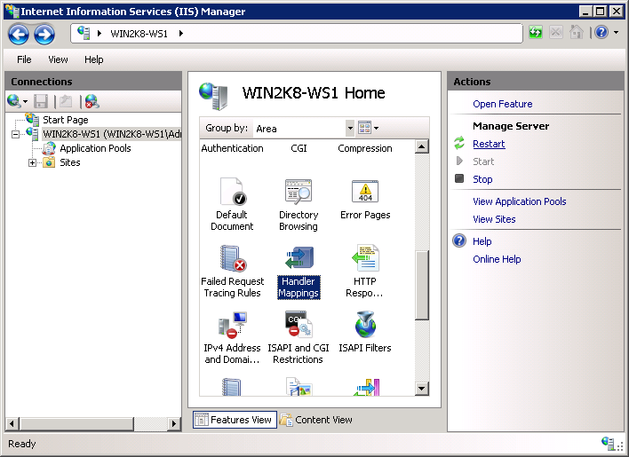

To resolve the error "The FastCGI process exited unexpectedly" install the below package:
To fix it I had to install the Visual C++ Redistributable for Visual Studio 2012 Update 3
http://www.microsoft.com/en-us/download/confirmation.aspx?id=30679
Microsoft IIS 7.0 and later
This section contains instructions for manually setting up Internet Information Services (IIS) 7.0 and later to work with PHP on Microsoft Windows Vista SP1, Windows 7, Windows Server 2008 and Windows Server 2008 R2. For instructions on setting up IIS 5.1 and IIS 6.0 on Windows XP and Windows Server 2003 refer to Microsoft IIS 5.1 and IIS 6.0.
Enabling FastCGI support in IIS
FastCGI module is disabled in default installation of IIS. The steps to enable it differ based on the version of Windows being used.
To enable FastCGI support on Windows Vista SP1 and Windows 7:
-
In the Windows Start Menu choose "Run:", type "optionalfeatures.exe" and click "Ok";
-
In the "Windows Features" dialog expand "Internet Information Services", "World Wide Web Services", "Application Development Features" and then enable the "CGI" checkbox;
-
Click OK and wait until the installation is complete.

To enable FastCGI support on Windows Server 2008 and Windows Server 2008 R2:
-
In the Windows Start Menu choose "Run:", type "CompMgmtLauncher" and click "Ok";
-
If the "Web Server (IIS)" role is not present under the "Roles" node, then add it by clicking "Add Roles";
-
If the "Web Server (IIS)" role is present, then click "Add Role Services" and then enable the "CGI" checkbox under "Application Development" group;
-
Click "Next" and then "Install" and wait for the installation to complete.

Configuring IIS to process PHP requests
Download and install PHP in accordance to the instructions described in manual installation steps
Note:
Non-thread-safe build of PHP is recommended when using IIS. The non-thread-safe builds are available at » PHP for Windows: Binaries and Sources Releases.
Configure the CGI- and FastCGI-specific settings in php.ini file as shown below:
Example #1 CGI and FastCGI settings in php.ini
fastcgi.impersonate = 1 fastcgi.logging = 0 cgi.fix_pathinfo=1 cgi.force_redirect = 0
Configure IIS handler mapping for PHP by using either IIS Manager user interface or a command line tool.
Using IIS Manager user interface to create a handler mapping for PHP
Follow these steps to create an IIS handler mapping for PHP in IIS Manager user interface:
-
In the Windows Start Menu choose "Run:", type "inetmgr" and click "Ok";
-
In the IIS Manager user interface select the server node in the "Connections" tree view;
-
In the "Features View" page open the "Handler Mappings" feature;
 -
In the "Actions" pane click "Add Module Mapping...";
-
In the "Add Module Mapping" dialog enter the following:
- Request path: *.php
- Module: FastCgiModule
- Executable: C:\[Path to PHP installation]\php-cgi.exe
- Name: PHP_via_FastCGI
-
Click "Request Restrictions" button and then configure the mapping to invoke handler only if request is mapped to a file or a folder;
-
Click OK on all the dialogs to save the configuration.

Using command line tool to create a handler mapping for PHP
Use the command shown below to create an IIS FastCGI process pool which will use php-cgi.exe executable for processing PHP requests. Replace the value of the fullPath parameter with the absolute file path to the php-cgi.exe file.
Example #2 Creating IIS FastCGI process pool
%windir%\system32\inetsrv\appcmd set config /section:system.webServer/fastCGI ^ /+[fullPath='c:\PHP\php-cgi.exe']
Configure IIS to handle PHP specific requests by running the command shown below. Replace the value of the scriptProcessor parameter with the absolute file path to the php-cgi.exe file.
Example #3 Creating handler mapping for PHP requests
%windir%\system32\inetsrv\appcmd set config /section:system.webServer/handlers ^ /+[name='PHP_via_FastCGI', path='*.php',verb='*',modules='FastCgiModule',^ scriptProcessor='c:\PHP\php-cgi.exe',resourceType='Either']
This command creates an IIS handler mapping for *.php file extension, which will result in all URLs that end with .php being handled by FastCGI module.
Note:
At this point the required installation and configuration steps are completed. The remaining instructions below are optional but highly recommended for achieving optimal functionality and performance of PHP on IIS.
Impersonation and file system access
It is recommended to enable FastCGI impersonation in PHP when using IIS. This is controlled by the fastcgi.impersonate directive in php.ini file. When impersonation is enabled, PHP will perform all the file system operations on behalf of the user account that has been determined by IIS authentication. This ensures that even if the same PHP process is shared across different IIS web sites, the PHP scripts in those web sites will not be able to access each other's files as long as different user accounts are used for IIS authentication on each web site.
For example IIS 7, in its default configuration, has anonymous authentication enabled with built-in user account IUSR used as a default identity. This means that in order for IIS to execute PHP scripts, it is necessary to grant IUSR account read permission on those scripts. If PHP applications need to perform write operations on certain files or write files into some folders then IUSR account should have write permission to those.
To determine what user account is used as an anonymous identity in IIS 7 use the following command. Replace the "Default Web Site" with the name of IIS web site that you use. In the output XML configuration element look for the userName attribute.
Example #4 Determining the account used as IIS anonymous identity
%windir%\system32\inetsrv\appcmd.exe list config "Default Web Site" ^
/section:anonymousAuthentication
<system.webServer>
<security>
<authentication>
<anonymousAuthentication enabled="true" userName="IUSR" />
</authentication>
</security>
</system.webServer>
Note:
If userName attribute is not present in the anonymousAuthentication element, or is set to an empty string, then it means that the application pool identity is used as an anonymous identity for that web site.
To modify the permissions settings on files and folders, use the Windows Explorer user interface or icacls command.
Example #5 Configuring file access permissions
icacls C:\inetpub\wwwroot\upload /grant IUSR:(OI)(CI)(M)
Set index.php as a default document in IIS
The IIS default documents are used for HTTP requests that do not specify a document name. With PHP applications, index.php usually acts as a default document. To add index.php to the list of IIS default documents, use this command:
Example #6 Set index.php as a default document in IIS
%windir%\system32\inetsrv\appcmd.exe set config ^ -section:system.webServer/defaultDocument /+"files.[value='index.php']" ^ /commit:apphost
FastCGI and PHP Recycling configuration
Configure IIS FastCGI settings for recycling of PHP processes by using the commands shown below. The FastCGI setting instanceMaxRequests controls how many requests will be processed by a single php-cgi.exe process before IIS shuts it down. The PHP environment variable PHP_FCGI_MAX_REQUESTS controls how many requests a single php-cgi.exe process will handle before it recycles itself. Make sure that the value specified for FastCGI InstanceMaxRequests setting is less than or equal to the value specified for PHP_FCGI_MAX_REQUESTS.
Example #7 Configuring FastCGI and PHP recycling
%windir%\system32\inetsrv\appcmd.exe set config -section:system.webServer/fastCgi ^
/[fullPath='c:\php\php-cgi.exe'].instanceMaxRequests:10000
%windir%\system32\inetsrv\appcmd.exe set config -section:system.webServer/fastCgi ^
/+"[fullPath='C:\{php_folder}\php-cgi.exe'].environmentVariables.^
[name='PHP_FCGI_MAX_REQUESTS',value='10000']"
FastCGI timeout settings
Increase the timeout settings for FastCGI if it is expected to have long running PHP scripts. The two settings that control timeouts are activityTimeout and requestTimeout. Use the commands below to change the timeout settings. Make sure to replace the value in the fullPath parameter to contain the absolute path to the php-cgi.exe file.
Example #8 Configuring FastCGI timeout settings
%windir%\system32\inetsrv\appcmd.exe set config -section:system.webServer/fastCgi ^ /[fullPath='C:\php\php-cgi.exe',arguments=''].activityTimeout:"90" /commit:apphost %windir%\system32\inetsrv\appcmd.exe set config -section:system.webServer/fastCgi ^ /[fullPath='C:\php\php-cgi.exe',arguments=''].requestTimeout:"90" /commit:apphost
Changing the Location of php.ini file
PHP searches for php.ini file in several locations and it is possible to change the default locations of php.ini file by using PHPRC environment variable. To instruct PHP to load the configuration file from a custom location run the command shown below. The absolute path to the directory with php.ini file should be specified as a value of PHPRC environment variable.
Example #9 Changing the location of php.ini file
appcmd.exe set config -section:system.webServer/fastCgi ^ /+"[fullPath='C:\php\php.exe',arguments=''].environmentVariables.^ [name='PHPRC',value='C:\Some\Directory\']" /commit:apphost
User Contributed Notes
Aditya
10 months ago
NG
2 years ago
Example #9 fails unless I change "php.exe" to "php-cgi.exe" as follows:
appcmd.exe set config -section:system.webServer/fastCgi ^
/+"[fullPath='C:\php\php-cgi.exe',arguments=''].environmentVariables.^
[name='PHPRC',value='C:\PHP\']" /commit:apphost
m dot benett at gmail dot com
1 year ago
In CGI and FastCGI settings in php.ini exaple, add:
extension_dir = 'ext'
Bradford Plummer
1 year ago
If you get an error running the second command in Example 7 try this instead:
%windir%\system32\inetsrv\appcmd.exe set config -section:system.webServer/fastCgi /+"[fullPath='C:\php\php-cgi.exe'].environmentVariables.[name='PHP_FCGI_MAX_REQUESTS',value='10000']"
Be sure to change the path to the php-cgi.exe file if it is not at C:\php\.
Good luck.
brrg58 at yahoo dot com
5 months ago
Following the installation steps second line of Example #3 resulted in an error:
ERROR ( message:Cannot find SITE object with identifier "path='*.php',verb='*',modules='FastCgiModule',scriptProcessor='(path-to-PHP)\php-cgi.exe',resourceType='Either']". )
Apparently there is an extra space before the ,path='*.php' that must be removed.
Thanks
daniel at kaliel dot net
4 months ago
I ran into the Error 500 with PHP 5.5 and Server 2008 R2 x64. The issue was that I installed the 64-bit version of Visual C++ Redistributable 2012 and not the 32-bit version.
mfuhrman at enetarch dot net
2 years ago
When installing PHP in Windows 2008 Server R2, you might find that Windows IIS 7 returns error code 500 when executing scripts. To resolve this do two things:
1) browse to the folder that contains the script with the error using CMD. Yes, this is the command prompt.
Then execute the script using something like: "C:\Program Files\PHP\PHP5.4\php.exe" [script-filename].php
Note that the quotes ("") are needed for file paths with spaces.
This will return the results of the script and any errors you might have.
2) To have IIS 7 return the errors to your webbrowser, turn off error logging and turn on display errors. And to make sure that all the errors are display, set error reporting to ALL.
log_errors = Off
display_errors = On
error_reporting = E_ALL
B-Edge (MS certified Trainer)
4 months ago
Excellent notes the last comment about adding the environment variables works as previously stated for both examples. I had to figure it out before reading these comments...
and yes the correct format would be
%windir%\system32\inetsrv\appcmd.exe set config -section:system.webServer/FastCGI ^ /+"[fullPath='c:\PHP\php-cgi.exe'].environmentVariables.[name='PHP_FCGI_MAX_REQUESTS',value='10000']"
and for the second one
%windir%\system32\inetsrv\appcmd.exe set config -section:system.webServer/FastCGI ^ /+"[fullPath='c:\PHP\php-cgi.exe'].environmentVariables.[name='PHPRC',value='c:\PHP\']"
hope this helped!
stpetersn at hotmail dot com
2 years ago
For setting the time out above it took me forever to figure out the right combination for double and single quotes (and no quotes) given I had spaces in the absolute path to my php-cgi.exe file. Here is what worked in case you have/had the same problem:
%windir%\system32\inetsrv\appcmd.exe set config -section:system.webServer/fastCgi ^
/[fullPath="'C:\Program Files (x86)\PHP\php-cgi.exe'"].activityTimeout:90 /commit:apphost
%windir%\system32\inetsrv\appcmd.exe set config -section:system.webServer/fastCgi ^
/[fullPath="'C:\Program Files (x86)\PHP\php-cgi.exe'"].requestTimeout:90 /commit:apphost
williamhong at 163 dot com
1 year ago
CgiModule may be better than FastCgiModule in development because CGI processes are not cached.